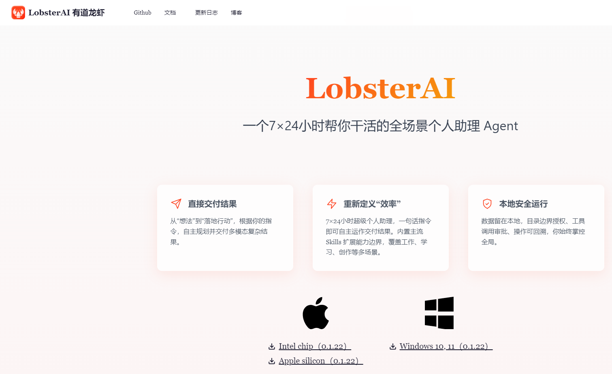
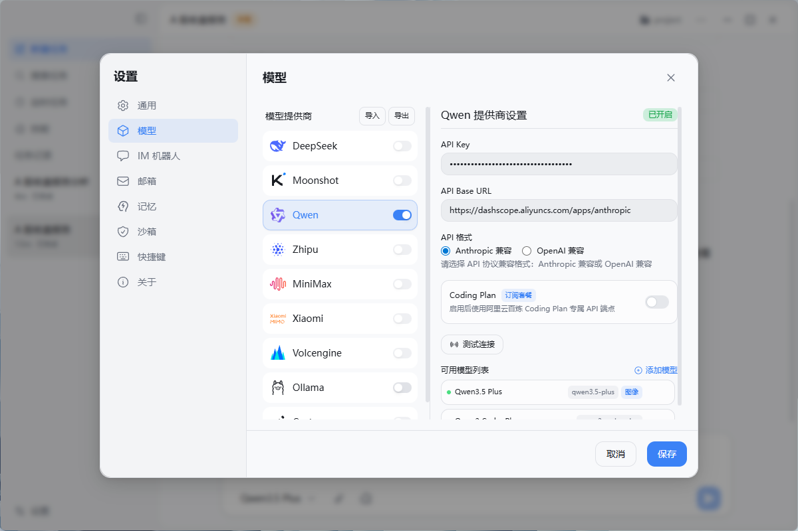
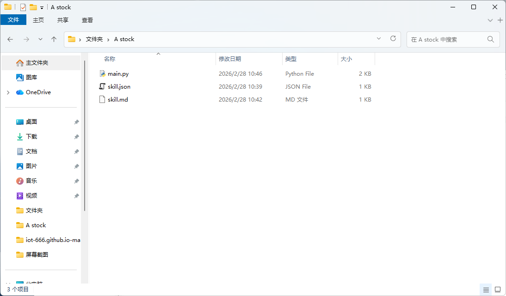
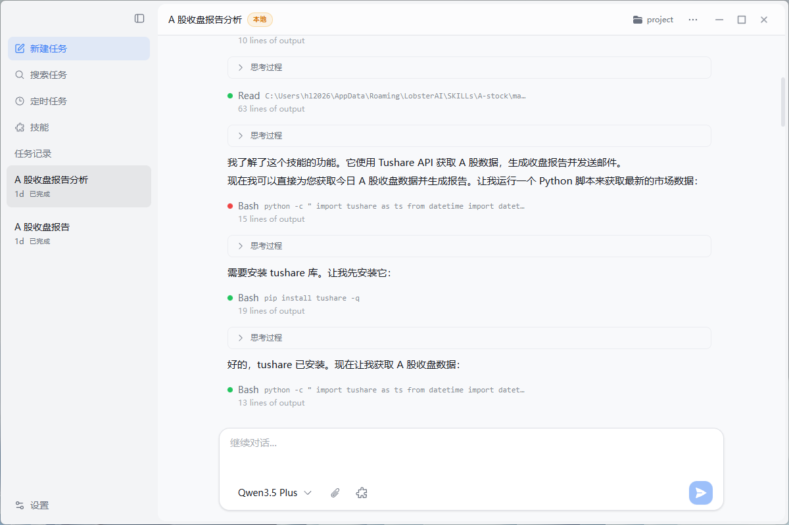

我最近学习AI量化炒股，试了几个工具，包括TradingAgent-CN 和openclaw这些工具，体验AI最新的发展。以下是我做股票复盘的一个简单应用，后续我会逐步完善自己用python写的skill复盘的功能。欢迎大家一起交流。
1.下载安装有道龙虾

2.配置大模型API key

3.选好skill,这里我自己用python写的一个股票复盘的skill

4.AI工作的时候，会自己安装python环境，这是我发现它最有用的地方,它解决了一个手动安装经常因为版本不兼容出错的问题。

5.这个是执行出来的复盘结果